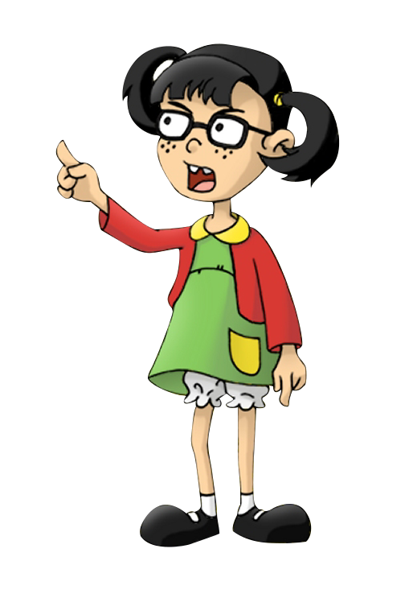

Chiquinha — A esperta e travessa da vila
**Chiquinha**, interpretada por **María Antonieta de las Nieves**, é a filha do Seu Madruga e uma das personagens mais queridas do seriado Chaves. Inteligente, travessa e um pouco manipuladora, ela está sempre envolvida nas confusões da vila — principalmente com o Chaves e o Kiko.
Apesar de suas armações, Chiquinha demonstra ser uma menina carinhosa e esperta, que ama muito o pai. Sua risada característica e suas lágrimas fingidas se tornaram marca registrada da personagem.
Frases famosas da Chiquinha:
- “Pois é, pois é, pois é!”
- “Não te dou outra porque...”
- “Ai, que burro, dá zero pra ele!”